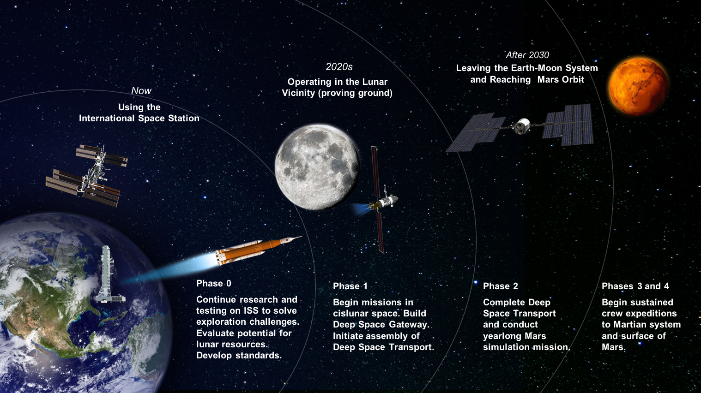

The Exploration Campaign builds on 18 continuous years of Americans and our international partners living and working together on the International Space Station. It leverages advances in the commercial space sector, robotics and other technologies, and accelerates in the next few years with the launch of NASA’s Orion spacecraft and Space Launch System (SLS) rocket.
The Exploration Campaign has five strategic goals:
1. Transition U.S. human spaceflight activities in low-Earth orbit to commercial operations that support NASA and the needs of an emerging private sector market.
2. Lead the emplacement of capabilities that support lunar surface operations and facilitate missions beyond cislunar space.
3. Foster scientific discovery and characterization of lunar resources through a series of robotic missions.
4. Return U.S. astronauts to the surface of the Moon for a sustained campaign of exploration and use.
5. Demonstrate the capabilities required for human missions to Mars and other destinations.
